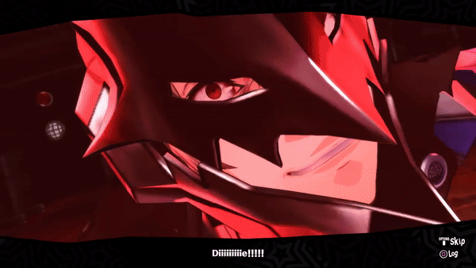
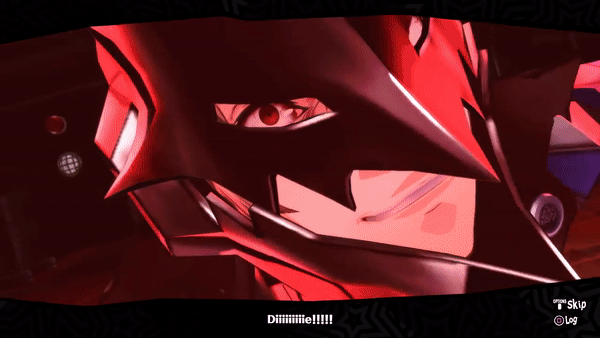

Akechi is the ninth member to be in the Phantom Thieves. He has
chin-length brown hair much like Haru, and brown eyes. His detective
outfit he wears a tan peacoat
with a black and white tie, and
black boots and gloves. With his Phantom thief attire, he has
a royal white outfit with a bit of red
with a red long-nosed
mask. He is an ace detective thats joins the Phantom Thivese but
then later sells the leader out,
showing his true colors. Turns out
he was actually wanting to kill the protagonist.
 
